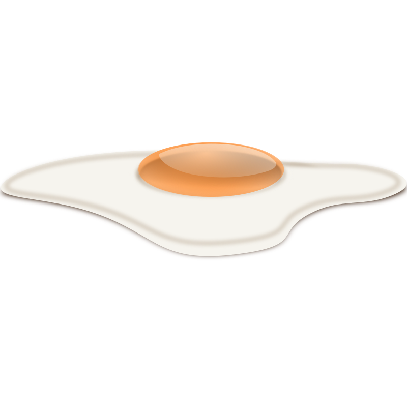

Respostas rápidas sobre a Turma do Bem e sobre o nosso projeto.
Grandes empresas, micro empresas e pessoas comuns podem fazer seu cadastro em login. Caso o cadastro seja por uma pessoa civil, coloque um endereço seguro para o encontro entre cliente e vendedor não sendo necessário colocar cnpj e cadastrar seus produtos em perfil
Você pode navegar pelas ofertas dos restaurantes participantes da ReTaste em Estabelecimentos e checar se há alguma oferta de doação, se caracterizando como gratuita.
O site aborda assuntos da fome e desperdício de alimentos no Brasil e no mundo, trazendo dados e questionamentos para o público. Além disso em nossa navegação é indentificável área de login para empresas e pessoas comuns, área de contato com nosso assistente virtual, FAQ para perguntas e respostas e uma área dedicada à apresentação com meios de comunicação com os membros do projeto ReTaste.
Para adiquirir as ofertas, basta ir até o local dito na lista junto do produto desejado. Entretanto, caso haja dúvidas sobre o produto ou localização, basta contatar o estabelecimento em questão por meio do contato fornecido junto à oferta do produto.
Envie uma mensagem e a nossa equipe responde.